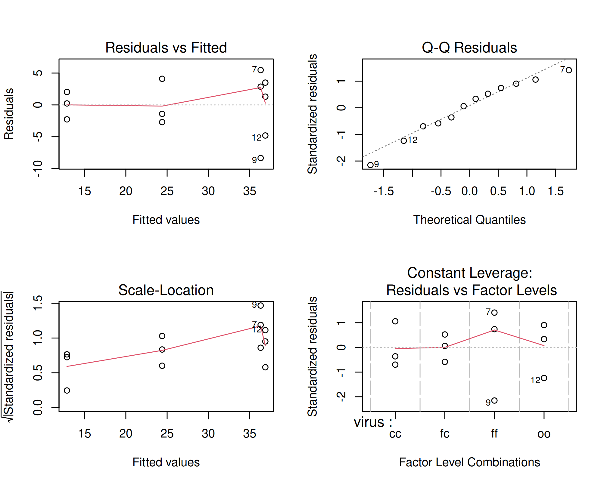
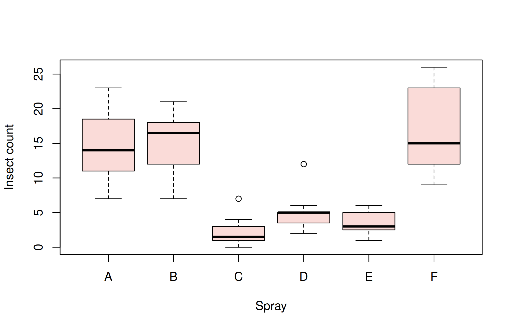

Explain the concept and assumptions of ANOVA, analyse a completely randomised design by hand and with aov(), compute CV, SE(m), SE(d) and CD, check assumptions, transform data, and choose and apply multiple comparison procedures.
21.1 The concept of analysis of variance
Analysis of variance (ANOVA), developed by R. A. Fisher at Rothamsted Experimental Station in the 1920s, partitions the total variation in a set of observations into parts attributable to different sources (treatments, blocks, error). Comparing the variation between treatment groups with the variation within groups tests whether the treatment means differ.
The t test compares two means. With \(k > 2\) treatments, carrying out all \(k(k-1)/2\) pairwise t tests would inflate the chance of at least one false significant result. ANOVA tests all the means at once:
\[H_0: \mu_1 = \mu_2 = \cdots = \mu_k \qquad \text{vs} \qquad H_1: \text{at least two means differ}\]
21.1.1 Assumptions
ANOVA assumes that
the effects are additive (the model below is correct),
the errors are independent (guaranteed by randomisation),
the errors are normally distributed, and
the errors have equal variance in all groups (homoscedasticity).
Assumptions 3 and 4 are checked from the residuals after fitting the model (Section 21.3).
21.1.2 Terminology
Factor: a variable whose effect is studied (variety, fertiliser, spacing). The values of a factor are its levels.
Treatment: a level of a factor, or a combination of levels of several factors.
Experimental unit (plot): the unit to which a treatment is applied.
Replication: the number of experimental units receiving each treatment.
One-way classification: observations classified by one factor. Multi-way classification: by two or more factors (Chapter 22).
21.2 Completely randomised design (CRD)
In a CRD the treatments are allocated to experimental units completely at random. It is suitable when the units are homogeneous, as in laboratory, pot-culture and greenhouse experiments.
where \(y_{ij}\) is the observation on the \(j\)th unit receiving treatment \(i\), \(\mu\) the general mean, \(\tau_i\) the effect of treatment \(i\), and \(e_{ij} \sim N(0, \sigma^2)\) independent errors.
Here \(T_i\) is the total of treatment \(i\), \(G\) the grand total, \(n = \sum r_i\) and \(\text{CF} = G^2/n\) the correction factor.
21.2.3 Example 21.1
An experiment at Tacna, southern Peru, studied the effect of two sweet potato viruses on yield. The four treatments were cuttings infected with sweet potato chlorotic stunt virus (cc), sweet potato feathery mottle virus (ff), both viruses (fc), and healthy plants (oo). Each treatment had three plots of 50 plants, and total yield (kg per plot) was recorded. The data are sweetpotato in agricolae.
library(agricolae)data(sweetpotato)sweetpotato
virus yield
1 cc 28.5
2 cc 21.7
3 cc 23.0
4 fc 14.9
5 fc 10.6
6 fc 13.1
7 ff 41.8
8 ff 39.2
9 ff 28.0
10 oo 38.2
11 oo 40.4
12 oo 32.1
The treatment variable must be a factor; here it already is. If treatments are coded as numbers, convert them with factor() before the analysis, otherwise R will fit a regression instead of an ANOVA.
TrSS ESS TSS F p_value
1170.2091667 179.9133333 1350.1225000 17.3447833 0.0007334
21.2.5 Analysis with aov()
The function aov() fits the model. The formula yield ~ virus reads “yield explained by virus”:
model <-aov(yield ~ virus, data = sweetpotato)summary(model)
Df Sum Sq Mean Sq F value Pr(>F)
virus 3 1170 390 17.3 0.00073 ***
Residuals 8 180 22
---
Signif. codes: 0 '***' 0.001 '**' 0.01 '*' 0.05 '.' 0.1 ' ' 1
\(F = 17.34\) with (3, 8) df and \(p < 0.001\), so the virus treatments differ significantly in yield. The error mean square, \(\text{EMS} = 22.49\), estimates \(\sigma^2\).
Tip
lm() fits the same model; anova(lm(yield ~ virus, data = sweetpotato)) gives the same ANOVA table. aov() is a wrapper around lm() with output tailored to ANOVA.
21.2.6 Coefficient of variation, standard errors and critical difference
Agricultural journals usually report, along with the means:
CV (%)\(= \sqrt{\text{EMS}} / \bar y \times 100\): a measure of experimental precision.
SE(m)\(= \sqrt{\text{EMS}/r}\): standard error of a treatment mean.
SE(d)\(= \sqrt{2\,\text{EMS}/r}\): standard error of the difference between two means.
CD (critical difference, or least significant difference) \(= t_{\alpha/2,\,\text{error df}} \times \text{SE(d)}\).
The CV of 17.2% is acceptable for a field experiment. Any two treatment means differing by more than the CD (8.93 kg) are significantly different at the 5% level.
21.3 Checking the assumptions
The residuals \(\hat e_{ij} = y_{ij} - \bar y_i\) estimate the errors. Four diagnostic plots are produced by plot() on the fitted model:
par(mfrow =c(2, 2))plot(model)

par(mfrow =c(1, 1))
Residuals vs Fitted: should show no pattern, with similar spread at all fitted values. A funnel shape indicates unequal variances.
Normal Q–Q: points should lie close to the line.
Scale–Location: another check of equal variance.
Residuals vs Leverage: identifies influential observations.
Formal tests:
shapiro.test(residuals(model)) # normality of residuals
Shapiro-Wilk normality test
data: residuals(model)
W = 0.96, p-value = 0.8
bartlett.test(yield ~ virus, data = sweetpotato) # homogeneity of variances
Bartlett test of homogeneity of variances
data: yield by virus
Bartlett's K-squared = 2.4, df = 3, p-value = 0.5
Both are non-significant, so the assumptions are reasonable.
21.3.1 When the assumptions fail: an example
The InsectSprays data give insect counts on 12 plots for each of six insecticides. Counts typically have a variance that increases with the mean:
boxplot(count ~ spray, data = InsectSprays, col ="#FADBD8",xlab ="Spray", ylab ="Insect count")

bartlett.test(count ~ spray, data = InsectSprays)
Bartlett test of homogeneity of variances
data: count by spray
Bartlett's K-squared = 26, df = 5, p-value = 0.00009
Bartlett’s test is highly significant: the variances are unequal. The square-root transformation, recommended for counts (Chapter 17), stabilises the variance:
model_sq <-aov(sqrt(count) ~ spray, data = InsectSprays)summary(model_sq)
Df Sum Sq Mean Sq F value Pr(>F)
spray 5 88.4 17.69 44.8 <2e-16 ***
Residuals 66 26.1 0.39
---
Signif. codes: 0 '***' 0.001 '**' 0.01 '*' 0.05 '.' 0.1 ' ' 1
bartlett.test(sqrt(count) ~ spray, data = InsectSprays)
Bartlett test of homogeneity of variances
data: sqrt(count) by spray
Bartlett's K-squared = 3.8, df = 5, p-value = 0.6
shapiro.test(residuals(model_sq))
Shapiro-Wilk normality test
data: residuals(model_sq)
W = 0.99, p-value = 0.7
After transformation both assumptions are satisfied, and the sprays differ highly significantly. Present the means in the original units (or back-transformed), but base the significance tests on the transformed analysis.
If no transformation works, use the non-parametric Kruskal–Wallis test:
kruskal.test(count ~ spray, data = InsectSprays)
Kruskal-Wallis rank sum test
data: count by spray
Kruskal-Wallis chi-squared = 55, df = 5, p-value = 2e-10
21.4 Multiple comparison procedures
A significant F test says that the treatments are not all equal, but not which treatments differ. Multiple comparison procedures answer that question. They differ in how they control the error rate:
Procedure
Use
Error rate controlled
Least significant difference (LSD)
Planned comparisons; only after a significant F (Fisher’s protected LSD)
per comparison
Duncan’s multiple range test (DMRT)
Widely used in agricultural research to rank all means
intermediate
Tukey’s honestly significant difference (HSD)
All pairwise comparisons
family-wise (experiment-wise)
Scheffé’s test
All possible contrasts, not only pairs
family-wise (most conservative)
Bonferroni
A small number of planned comparisons
family-wise
Dunnett’s test
Each treatment against a control
family-wise
The agricolae package implements these tests and labels the means with letters: means sharing a letter are not significantly different.
Study: model ~ "virus"
LSD t Test for yield
Mean Square Error: 22.49
virus, means and individual ( 95 %) CI
yield std r se LCL UCL Min Max Q25 Q50 Q75
cc 24.40 3.610 3 2.738 18.086 30.71 21.7 28.5 22.35 23.0 25.75
fc 12.87 2.159 3 2.738 6.553 19.18 10.6 14.9 11.85 13.1 14.00
ff 36.33 7.333 3 2.738 30.020 42.65 28.0 41.8 33.60 39.2 40.50
oo 36.90 4.300 3 2.738 30.586 43.21 32.1 40.4 35.15 38.2 39.30
Alpha: 0.05 ; DF Error: 8
Critical Value of t: 2.306
least Significant Difference: 8.929
Treatments with the same letter are not significantly different.
yield groups
oo 36.90 a
ff 36.33 a
cc 24.40 b
fc 12.87 c
The LSD is 8.93 kg, the same as the CD computed above. Healthy plants (oo) and plants infected with feathery mottle virus alone (ff) do not differ; both outyield cc, and the double infection fc gives the lowest yield.
21.4.2 Duncan’s multiple range test (DMRT)
DMRT uses a different critical range for means that are \(p\) steps apart in the ranked list:
dmrt <-duncan.test(model, "virus", console =TRUE)
Study: model ~ "virus"
Duncan's new multiple range test
for yield
Mean Square Error: 22.49
virus, means
yield std r se Min Max Q25 Q50 Q75
cc 24.40 3.610 3 2.738 21.7 28.5 22.35 23.0 25.75
fc 12.87 2.159 3 2.738 10.6 14.9 11.85 13.1 14.00
ff 36.33 7.333 3 2.738 28.0 41.8 33.60 39.2 40.50
oo 36.90 4.300 3 2.738 32.1 40.4 35.15 38.2 39.30
Alpha: 0.05 ; DF Error: 8
Critical Range
2 3 4
8.929 9.305 9.515
Means with the same letter are not significantly different.
yield groups
oo 36.90 a
ff 36.33 a
cc 24.40 b
fc 12.87 c
Study: model ~ "virus"
HSD Test for yield
Mean Square Error: 22.49
virus, means
yield std r se Min Max Q25 Q50 Q75
cc 24.40 3.610 3 2.738 21.7 28.5 22.35 23.0 25.75
fc 12.87 2.159 3 2.738 10.6 14.9 11.85 13.1 14.00
ff 36.33 7.333 3 2.738 28.0 41.8 33.60 39.2 40.50
oo 36.90 4.300 3 2.738 32.1 40.4 35.15 38.2 39.30
Alpha: 0.05 ; DF Error: 8
Critical Value of Studentized Range: 4.529
Minimun Significant Difference: 12.4
Treatments with the same letter are not significantly different.
yield groups
oo 36.90 a
ff 36.33 ab
cc 24.40 bc
fc 12.87 c
Base R also has TukeyHSD(), which gives a confidence interval and adjusted p-value for every pair:
Pairs whose interval does not include zero are significantly different. Tukey’s test is more conservative than LSD and DMRT: it separates the means into overlapping groups (a, ab, bc, c) instead of the three distinct groups found by LSD.
21.4.4 Scheffé and Bonferroni
scheffe.test(model, "virus")$groups
yield groups
oo 36.90 a
ff 36.33 a
cc 24.40 ab
fc 12.87 b
yield groups
oo 36.90 a
ff 36.33 a
cc 24.40 ab
fc 12.87 b
21.4.5 Comparisons with emmeans
The emmeans package (Lenth 2024) computes estimated marginal means and comparisons for almost any model, including unbalanced data and mixed models (Chapter 25).
library(emmeans)
Welcome to emmeans.
Caution: You lose important information if you filter this package's results.
See '? untidy'
contrast estimate SE df t.ratio p.value
cc - fc 11.533 3.87 8 2.979 0.0686
cc - ff -11.933 3.87 8 -3.082 0.0592
cc - oo -12.500 3.87 8 -3.228 0.0482
fc - ff -23.467 3.87 8 -6.061 0.0014
fc - oo -24.033 3.87 8 -6.207 0.0012
ff - oo -0.567 3.87 8 -0.146 0.9988
P value adjustment: tukey method for comparing a family of 4 estimates
# Dunnett's test: each virus treatment against healthy plants (oo)contrast(em, method ="trt.vs.ctrl", ref ="oo")
contrast estimate SE df t.ratio p.value
cc - oo -12.500 3.87 8 -3.228 0.0313
fc - oo -24.033 3.87 8 -6.207 0.0007
ff - oo -0.567 3.87 8 -0.146 0.9917
P value adjustment: dunnettx method for 3 tests
Compared with healthy plants, infection with cc alone and with both viruses (fc) reduced yield significantly, while infection with ff alone did not.
Warning
Which test should I use? Choose the procedure before looking at the data, according to the question. For comparing each treatment with a control, use Dunnett. For a few planned comparisons, use contrasts (Chapter 23). For all pairwise comparisons, Tukey’s HSD controls the overall error rate. LSD and DMRT are less conservative and are still widely used in agricultural journals; use LSD only when the overall F test is significant. For quantitative treatments (doses, rates, dates), do not use multiple comparisons at all; fit a response curve (Chapters 23 and 30).
21.5 Unequal replication
The same functions work when treatments have different numbers of replications. For example, with the last observation of fc missing:
sp2 <- sweetpotato[-6, ]model2 <-aov(yield ~ virus, data = sp2)summary(model2)
Df Sum Sq Mean Sq F value Pr(>F)
virus 3 940 313.4 12.2 0.0036 **
Residuals 7 180 25.7
---
Signif. codes: 0 '***' 0.001 '**' 0.01 '*' 0.05 '.' 0.1 ' ' 1
LSD.test(model2, "virus")$groups
yield groups
oo 36.90 a
ff 36.33 a
cc 24.40 b
fc 12.75 c
With unequal replication, the LSD differs between pairs of means; agricolae then uses the harmonic mean of the replications and reports it, while emmeans computes the exact standard error for each pair.
21.6 Live R laboratory
One-way ANOVA of the sweet potato virus trial
Edit the code, then select Run R. The first run downloads R into your browser and may take a little time. Copy code lets you use the example in RStudio.
Investigate. Compare the differences between means with the CD. Which pairs differ by LSD but not by Tukey’s HSD, and why?
21.7 Practical 23 and exercises
Analyse the PlantGrowth data as a CRD. Check the assumptions and compare the treatments with the control using Dunnett’s test.
Analyse the chickwts data (weight of chicks on six feeds). Use Tukey’s HSD to group the feeds.
For the InsectSprays data, use DMRT on the square-root transformed counts and present the treatment means in the original units with their letter groups.
Compute the CD at the 1% level for the sweet potato experiment.
Historical Insights
John Tukey proposed the honestly significant difference in 1949 and 1953, Henry Scheffé his method for all contrasts in 1953, and David Duncan his multiple range test and Charles Dunnett his test against a control, both in 1955.
21.8 Chapter Summary
Fill in the blanks
Answers are given at the end of the chapter.
ANOVA was developed by R. A. __________.
The correction factor in ANOVA is __________.
In a CRD the error SS is obtained by __________.
The CD equals \(t_{\alpha/2}\) multiplied by __________.
Tukey’s HSD uses the __________ range distribution.
Comparing each treatment with a control is done by __________ test.
The most conservative procedure, valid for all contrasts, is __________ test.
Quantitative treatments should be analysed by fitting a __________ rather than by multiple comparisons.
Short-answer questions
State the assumptions of ANOVA and how each is checked.
Compare LSD, DMRT, Tukey’s HSD and Scheffé’s test.
Why should LSD be used only after a significant F test?
How does unequal replication affect multiple comparisons?
What should be done when the assumptions of ANOVA fail?
Numerical and conceptual questions
Answers are given at the end of the chapter.
A CRD has EMS = 22.49 and grand mean 27.63. Find the CV.
With EMS = 22.49, \(r = 3\) and 8 error df (\(t_{0.025,8} = 2.306\)), find the CD at 5%.
For the same data, with \(q_{0.05;4,8} = 4.529\), find Tukey’s HSD.
A CRD has 6 treatments with 12 replications. Find the error df.